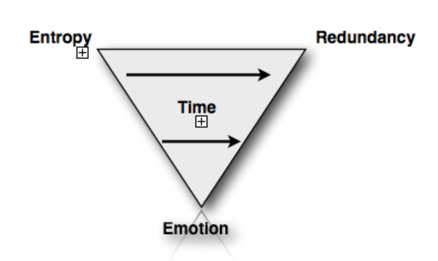

By Sanjay Poyzer, 2011
with thanks to my thesis tutor, Dr Chris KennetMusic analysis is a questionable field. Thereʼs a gap between music theorists-both popular (Kivy, 2007; Kennett, 2003; Frith, 1998, etc.) and classical (Meyer, 1989;Cooke, 1959, etc.) - and neuroscientists (Levitin, 2007, 2009a, b; Peretz & Zatorre,2005, etc.). Classicists look for a meaning behind the supposed language of music1, populists dismiss such notions against theories of subjectivity and neuroscientists strive for proof that it affects us all the same.2 Music theorists from both the popular and classical worlds seem to be - using limited evidence - striving to create an instruction book for how to listen to music, (or how to understand it better at least) rather than creating a theory of what actually happens to people when we listen to music based on empirical evidence. The neuro-scientists do seem to be closer to doing so, but havenʼt presented their findings in a practical context, unsurprisingly given how new the field is.3 Neuroscience has come much further in studying vision, as other animals process visual stimuli in much the same way we do, (Abbot, 2002) but we are the only animals that fully appreciate music.4
In general, popular music studies deals with conscious decisions made when when choosing musical preferences in broad strokes like genre. But the captivation that certain songs hold over us is a much more individual experience, which is why I have chosen to focus more on neuroscience.
The aim of my thesis is better understanding of the value of music to people, in the hope of helping both musicians (myself included) to create better music and the music industry to market and monetize music better. Cross (2004) wrote that music gathers ʻmeaning from the contexts within which it happens and in turn [contributes] meaning to those contextsʼ5. My ʻHoly Trinityʼ Model hopes to explain how this “floating intentionality” (ibid) happens and becomes our individual experience of a piece of music.
As my background is in creating music rather than writing about it, I come from none of the above camps. This is why Iʼve strived to come up with a model which uses the undeniable truths from both areas of study (music theory and music neuroscience) which hopes to be practically useful to other musicians. The research presented within this thesis proves the fact that (while my ʻHoly Trinity theoryʼ within proves how) a certain piece of music can give somebody an indescribable feeling of divinity, while others wouldnʼt even glorify the same collection of sounds by calling it music.
It is generally accepted by Classical theorists such as Kivy (2007) that music is better appreciated and enjoyed by those who “understand” what they listen to. There is a syntax that one must learn to truly comprehend the meaning. Meanwhile Pop is created for people to enjoy without thinking about it at all.
This thesis deals primarily with that initial, gut reaction - how people feel rather than what they think about music.
“Without music, life would be an error.”
“Music brings about similar physical responses in different people at the same time. This is why it is able to draw groups together and create a sense of unity. It does not matter that a dirge or funeral march may be appreciated in a different way by a musician and by an unsophisticated listener. They will certainly be sharing some aspects of the same physical experience at the same moment, as well as sharing the emotions aroused by the funeral itself. Music has the effect of intensifying or underlining the emotion which a particular event calls forth, by simultaneously co-ordinating the emotions of a group of people.”
Almost every piece in my bibliography talks about musicʼs unprecedented effect on people, with Meyer (1961) being one notable example. Meyerʼs work fails to cite any evidence of musicʼs power beyond behavioral observations,6 yet Iʼd be extremely surprised if anyone reading this thesis is yet to experience the overwhelming feeling that has caused music to have such an important place in human history and culture. Rest assured though, since Meyerʼs work there have been many studies analyzing what happens to peopleʼs brains when they are in love with a piece of music and the phenomenon of the “chills” effect is very much a real one. In fact, neuro-imaging techniques and behavioral studies have revealed that with specific musical stimuli, the same neural substrates are activated as “biologically significant stimuli such as food and drug abuse” (Peretz & Zatorre, 2005, pp. 99) and there is even evidence for the existence of neural networks specialized for the processing of scale structure in melodies. (ibid, pp.93) resulting in widening acceptance by neuroscientists that music must have “adaptive benefits” due to there being space in the brain set aside solely for itʼs appreciation. (Peretz, 2002, pp.163) (Levitin, 2006, 2009a, b) Music is even used for therapy, with chosen music even having a calming effect on acute psychotic episodes. (Morgan et al, 2010) There are even extreme examples, such as the sufferers of musicogenic epilepsy (one patient had severe seizures only when classical music was played to her and brain scans showed that her memory centres were active (Peretz, 2002, pp.160)), which point toward the strongest emotional reactions towards music coming from itʼs powerful associative qualities.
“Music, or musical sounds of some variety, are so interwoven with human life that they probably played a greater part in prehistory than can ever be determined.”
In fact many neuroscience articles in my bibliography show that music affects increasingly varied aspects of the brain. (Large and Snyder, 2009) One example being the dispelling of previous thoughts about the right side of the brain processing music, with findings that anaesthesia to the left hemisphere caused loss of singing ability, speech comprehension and production where the right hemisphere anaesthetised disabled comprehension of pitch and tone. (Hachinski & Hachinski, 1994) (Tramo, 2001) (Storr, 1992, pp. 36)
“PET-based studies demonstrate that listening to the music activates the right hemisphere (thought to be the more “intuitive” part of the brain) in inexpert listeners, whereas the left hemisphere, the “rational” side, is instead activated in musicians. Moreover, the right hemisphere perceives timbre and melody, whereas the left one analyses rhythm and pitch, the “mathematical” and “syntactical” face of music, strictly interacting with the language areas. There is no doubt that the same Mozartʼs Symphony is perceived with a different way and different depth when listened to by a naïve listener or by a Mozart lover, or by a great Mozart conductor. It has been demonstrated that the naïve listener only exhibits a “gestaltic” perception of music.”
Music immerses and stimulates many parts of the brain, and this is the first step to understanding why it is so important. But this is not the effect of all music, all the time on all people...
So what exactly makes music good?
“Nothing is either good, or bad, but thinking makes it so.”
“Beauty is in the limbic system of the beholder.”
"The thing about sound is that from somewhere else the sound is always different."
“Music is by essence perceptually driven. Unlike speech, music is not associated with a fixed semantic system, although it may convey meaning through other systems, such as emotional analysis and associative memories.”
This analysis of music as a “phenomenon of subjective human experience” as opposed to a laboratory controlled stimulus (Altenmüller, 2001) is pertinent to understanding itʼs effects, but often neglected.
Narmourʼs (1989) Implication-Realisation model hypothesised that “intervallic continuation, registral direction, and specific pitch (when the mode is known) are all separately subject to cognitive prediction and is dependant on laws of implication and expectancy. Moreover, in order to qualify as a realisation the model says also that where a melodic realisation is to occur (place) and how long it lasts (time) are essential to any understanding of implication.” But this model would only fit the small portion of the worldʼs population who are trained to the semantics of western Classical music. This is because music can never be translated or deciphered in any universal way as the exact meaning(s) that have been written about is only ever perceived -or better “felt”- by the writers [listener] in question. (Altenmüller, 2001)
Neuroscience shows that music does have some similar effects on our brains, but exactly how much has not yet been found. Rhythm, for example, is generally processed more similarly than other features of music such as melody, as it utilises more instinctive parts of the brain such as the core auditory and motor areas.9 In the talk released as “Notes & Neurons”, itʼs shown how western listeners can adapt to eastern scales9 fairly quickly just as Krumhansl (2000) shows that people adapt fairly quickly to the North Sami Yoik tradition when tested. The studies use different brain imaging processes, including the SOM Model, so the fact that they both come to the same result is substantial- it seems to suggest that we all hear music in the same way but the crucial variable here is the listenerʼs experience with the music. In both of these studies, the listeners became accustomed to the music after repeatedly being played it. This suggests that music can be learnt like a language and is an important point I will come back to.
So if music is a language, can everyone understand it?
“Subjectivity measures nothing consistently.”
"No engineer can determine for sure where one sound ends and another begins, either in space or time. Nevertheless sounds are differentiated, they can be located, and they can be analysed by you and me, simply by listening."
The notion that music can have an objective meaning and worth is an outdated, western classical ideal. Itʼs been said that Music is more widely "understood"12 because it requires knowledge of syntax13, rather than semantics like natural language,14 (Kivy, 2006: 216) while neuro-studies have shown that we use a syntax to understand music through activity in the Brocaʼs area, typically used for language processing. (Patel, 2003; Holden, 2001) Scans show activity in this area is increased even further when listening to conventional chord sequences as opposed to unexpected notes. (ibid)
“But what use is music? Music can certainly be regarded as a form of communication between people; but what it communicates is not obvious. Music is not usually representational: it does not sharpen our perception of the external world, nor, allowing for some notable exceptions, does it generally imitate it. Nor is music propositional: it does not put forward theories about the world or convey information in the same way as does language.”
A study investigating semantic priming of words using sentences and music showed that concrete association of music to words was only evident when the sound in question actually resembled the word (e.g., birdʼs tweeting primed the word ʻbirdʼ) or qualities of objects (e.g., low tones associated with basement). The point of the experiment was to see how the meaning of music could be conveyed by music alone, and it concluded that music uses the same brain areas as language to convey meaning, showing that there must be a syntax that is learnt for full appreciation. (Koelsch, et al, 2004)
Charles Darwin popularly hypothesised that music may have been a protolanguage in ancient times. (Cervellin & Lippi, 2011) "...given the similarities between music and language, it's not surprising that there has been a running debate for more than two hundred years as to whether they evolved in tandem or independently- and, if the latter, which came first. Darwin speculated that musical tones and rhythms were used by our half-human ancestors, during the season of courtship... excited by love... jealousy, rivalry and triumph" (Sachs, 2007: x)
The music-language metaphor is a tenuous one (not to mention a tired one) as there are no comparable features. A word is not like a chord because chords are never defined to any standards. (Although classical composers have strived to.15) This important, inherent difference between language and music points out the real relationship between them. Much like sexual intercourse and foreplay, one has an obvious function whereas the other is a much more subjective pleasure, but they both follow the same basic principles and participants, both can be pleasurable in different but similar ways, and one things for sure, they definitely compliment each other extremely well.
Music and language do not use the exact same neural networks however, studies show, (Groussard et al., 2010) but they do “share the same executive and selection processes, which are subserved by the left interior frontal cortex. (ibid)
“The assumption of an intimate connection between music and speech is corroborated by the findings of overlapping and shared neural resources for music and language processing in both adults and children. In this respect it appears that the human brain, at least at an early age, does not treat language and music as strictly separate domains, but rather treats language as a special case of music.”
“Linguistic analysts distinguish prosodic features of speech from syntactic: stress, pitch, volume, emphasis, and any other features conveying emotional significance, as opposed to grammatical structure of literal meaning. There are many similarities between prosodic communication and music. Infants respond to the rhythm, pitch, intensity, and timbre of the motherʼs voice; all of which are part of music.”
It's worth noting when talking about the ambiguity of music versus the exactness of language, especially in relation to poetry and lyrics, that everyday language is actually more often than not allowed to be abstract. We have set definitions for words, but even setting aside the fact that there are various versions of these definitions (a paradox of modern language really - Should a definition not be definite?) we rarely refer to them. In practice, people much more often than not learn what words mean through experienced context. Much like musical phrases/motifs/other attributes. This is of course the reason why definitions constantly change; because they are constantly reinvented by people using them in slightly different contexts.
Cooke (1959) posits that “our culture is impoverished” by our lack of defined syntax for understanding music and attempts to define one in “The Language Of Music”. This is not only impossible because of the nature of music and how we appreciate it as described above, it would actually destroy itʼs essence.
In regards to popular music, “most people if asked what a song ʻmeansʼ refer to the words” (Frith, 1998: 158) so pop music has a level of meaning which instrumental music does not. Lyrics though, are essentially poems which have been given a melody. There are ways in which their combination can be given meaning which is more than the sum of itʼs parts, not to mention factors which can only be experienced through the combination of those such as performance nuances and accent, (ibid -182) but for the most part music and lyrics can be separated into two different cognitions. In any case, although many parts of this thesis may apply to poetry it is really cognition of music that this thesis primarily deals with.
In my own personal experience, I find it hard to concentrate on intense reading or writing sessions when listening to music to lyrics, but impossible to concentrate if there is background talking without music or a capella music in English (the only language I speak). I found a good solution is to listen to instrumental music. I then found that instrumental music, when played on my first instrument, guitar, is still distracting (though not as much as the first two stimuli). My research suggests this is because of more of my brain being used to process the semantical information of a guitar being played- My mirror neurons (Levitin, 2009a) are subconsciously telling me which string is being played, which position the lick is being played in, etc. So even before I start having any emotional feelings towards the music, how much it affects me is already being decided by who I am.
So where does this connection with music start exactly?
Obviously, some people are more musically inclined at a young age than others, however studies show there is no neurological difference between childrenʼs brains who choose to study music and those who do not. (Norton et al., 2005) In fact, even 4 month old babies, (and besides the point, but also even rats and starling) have shown they can tell the difference between consonance and dissonance. (Tramo, 2001) It goes back even further though, with studies showing there is “a neuronal architecture serving the processing of music already present at birth”, suggesting we start to become accustomed to deciphering music in utero. (Perani et al, 2010)
After citing The Independent on Sunday's 16 January 1994's article '"Neighbours" Theme Learned in the Womb" Maconie goes further in depth into how "Babies can hear, are stimulated by, and respond to sound before birth. The implication that babies not only hear, but remember what they have heard before, long before our earliest memories, shows the scope of our subconscious relationship with music. (Maconie, 1997: 37-39)
“Since infants in the womb react both to unstructured noise and to music with movements which their mothers can feel, it seems likely that auditory perception prompts the babyʼs first realisation that there is something beyond itself to which it is nevertheless related. After birth, vocal interchange between mother and infant continues to reinforce mutual attachment, although vision soon becomes equally important. The crooning, cooing tones and rhythms which most mothers use when addressing babies are initially more significant in cementing the relationship between them than the words which accompany these vocalisations.This type of communication continues throughout childhood... Moreover, although relationships between adults usually involve verbal interchange, they do not always do so.”
Itʼs also been said that we are born with an innate “number” sense, an approximate sense of arithmetic that is independent of language and can be mapped to parietal lobe circuits. This has been linked to early ability to process music, which after all, can much easier be turned into mathematics then speech recognition can (in non-pitched languages, at least.) (Balter, 2001)
The idea of preference from birth is related to Dutton (2011)ʼs ʻDarwinian Beautyʼ, of which our feelings towards certain things in the world are in our genes. This idea is twinned with the more popularly held idea that beauty is a cultural preference. The idea has not been discussed in practical relation to music however, and although it is worth remembering just how deep our subconscious feelings can go, thus far there is no evidence to suggest we inherit specific music taste - Just a vague preference for consonance.
Emotional connection with music is dependant upon longterm musical memory creating associations with the piece through the musical semantic memory system, as defined by Groussard et al (2010): “It is musical semantic memory that allows us to experience a strong feeling of knowing when listening to music (reflecting familiarity processes) and gives us the ability to hum the subsequent notes of a melody, or in some cases retrieve the title, composer or performer of a particular excerpt (corresponding to identification).”
Snyder (2000:7) shows how our entire perceptual awareness is created through a relationship between our ʻEchoic Memoryʼ and ʻLong-Term Memoryʼ called Perceptual Binding and Feature Extraction. In essence, we perceive things how we do because of how theyʼve been perceived before - creating an important feedback loop. What breaks our feedback loop and contributes to our opinions of pieces of music changing is called by Snyder a “nuance”. This is an important idea to keep in mind when I come to my Holy Trinity Model in Section 6.
Emotions are states of the brain which arise from environmental stimuli with the evolutionary function of reminding oneself of previous encounters with the given stimuli. Our mood, therefore, is always constantly dictated by the environment we find ourselves in, including the aural environment. This is how we perceive music.
"Perception is mental activity arising from the interaction of the environment and the senses. The environment includes other people and their conversation as well as light and shade, heat and cold. The mental activity that gives rise to perceptions of the world is not so much something we choose to do, as behavior forced upon us that we gradually learn to control. We are obliged to perceive because we cannot prevent our sense from responding to everyday stimuli. Though everybody has the same responses, not everyone has the same perceptions. Senses are what you are born with, whereas perception is something you learn, a skill at interpreting sense responses that is developed and refined as one grows."
“Listening to the same music in different situations, with different purposes and with different intensity, will affect... the experience.”
Richard Seymour (2011) explained how "The wiring of the sensory apparatus to those bits is shorter than the bits that have to pass through the 'thinky bit' - the cortex." Essentially, we feel before we think. And although, as Seymour notes, strong feelings appear to occur more in the solar plexus than anywhere else, science would suggest that our emotions really happen in the brain. These subconscious reactions to music are what weʼre really interested in when we talk about the majority of peopleʼs connection with music.
Semour (ibid) also presented the following picture in his talk:
He noted the audienceʼs initial reaction to the drawing, asking them “Is it beautiful? Is it exciting?” resulting in “some bored looking gentlemen.” Seymour then told them that the picture was in fact, “the last act on Earth of a little girl called Heidi, 5 years old, before she died of cancer to the spine.”
When put like this, it seems unquestionable to me that our knowledge of things changes how we feel about them. This is as true to music as it to art/design, and that fact is why music is much more akin to art than language - Itʼs not just about simply communicating, but about communicating subjective emotions.
“Happiness is not a matter of intensity but of balance, order, rhythm and harmony.”
So far Iʼve established and verified with modern neuroscience some truisms about how we experience music:
Bearing these truisms in mind, Iʼve constructed a model for understanding music, at itʼs most potent level of effecting people. The model uses the much lauded Shannonʼs Information Theory (Shannon, 1948) but takes into account an important differentiator between raw communication and art - Emotion.
Information Theory had been absent from much of psychology for some time (Luce, 2003) when Cross (2004) acknowledged Shannonʼs Information Theory (1948) as important for analysing the communicative functions, methods and causes of music. He outlines how in the context of the theory, the performer is the ʻsenderʼ [of information], the listener is the ʻreceiverʼ, the air is the channel and the information being transmitted is the sonic patterns which constitute the music. However, Cross expands, not all instances of music, especially those outside of Western culture,16 have distinct senders/performers and receivers/listeners as in many cases all parties are participating in the creation of the music. Cross (ibid, pp.3) writes that “music in these [more participatory] guises does not seem as easily assimilable as is language into [Shannonʼs] model” but this misses the point of musicʼs communicative qualities.
Musicʼs purpose is much more personal than simply communicating a message to others. We ʻplayʼ music, not ʻsayʼ music because the act of creating is much more akin to children hitting objects to understand their function than to an intellectual making an informed point in a debate. Music, especially the act of performing music, is about communicating with ourselves by helping ourselves understand more about, and explore, the world through our sense of hearing.
Diagram 1 illustrates the three points and the center-point between them.17 The center- point is a perfect musical experience.
The model is based on three variables, which are formed entirely from a given personʼs past experiences. If a given musical experience has too much, or too little, of any of these variables then - from the listenerʼs perspective - the music is imperfect. But if the experience strikes an exact balance between Entropy, Redundancy and Emotion, it is music in itʼs superlative, divine state (as described in Section 1).
Scholars such as Frith (1998: 100) have defined music as ʻorganised soundʼ, but a side effect of my theory is that it offers a new definition of music: ʻany experience inside the triangleʼ, but if a sound leans towards one of the three points too far, it loses the title of music and becomes just noise. (This is derived from the common usage of the word ʻnoiseʼ as a derogatory term for bad music.)
I have said ʻexperience in these definitions instead of ʻsoundʼ because anybody can call anything they want music. This is especially pertinent in live performances where visual stimuli affect enjoyment of the musical experience just as much as auditory stimuli. However, for the experience to affect people in the same way as described in Section 1, it must strike the Balance; that is when it becomes Music as the term is commonly understood.
“To be challenged as well as rewarded is a fundamental principle of life. Indeed the greater the challenge, the greater the reward. You don't need to be a neuroscientist to realise that.”
"If the world were not a stimulating place, we would not be aware of it."
Humans are cautious of the unknown. The ancient world that our ancestors lived in was an extremely dangerous place, so we evolved our prefrontal cortex to help work out that things that are similar to other things probably have similar effects. To this day, anything completely unusual in any sense will unsettle us. Even though, logically, we know that music (especially recorded music) can not harm us in any way, itʼs an instinctive reaction- an emotional response.
The flip-side of this is that entropy is the very thing that keeps us interested in music, and in fact, all of lifeʼs experiences. Humans are constantly looking for new things to excite and stimulate the various parts of their brain, and music is one of the best ways to do so. If music is auditory cheesecake, as Pinker (1997) put it, then each song is surely a flavour, and nobody wants to eat strawberry all their life. Anybody whoʼs ever listened to mainstream radio can attest to that.
This is not to mention the cultural pressures to listen to new, fashionable music, which the music industry both helps instigate and thrives upon. It is worth noting that, during puberty, these ʻEntropy taste makersʼ are more prevalent, as of course it is common for a personʼs music taste (and indeed, personality) to be defined.
By the same token that weird sounds will unsettle- recognisable sounds will comfort. This part of the trinity explains the phenomena of tonality and timbre, and why the observable evolution of these aspects of music in particular takes many generations, despite both our instincts and much of our culture pushing for entropy.
ʻThe human brain is habituative, that is, it suppresses repetitive and expected information.ʼ
“Recognition involves an interaction between current experience and memory. When this interaction continually produces a perfect match, the phenomenon of habituation can occur. When we completely ʻre-cogniseʼ something, there is no longer any need to consciously process this information because it is already completely familiar to us, which usually causes this information to pass out of the focus of conscious awareness and become part of our perceptual and conceptual background. This means, not that the information is no longer being processed at all, but only that the memory activation it causes is no longer at a level that would place it in conscious awareness. Aspects of our environment to which we have habituated move into the background of awareness, but are still very much a part of the unconscious context of ongoing experience.”
This is shorthand for ʻEmotional Relevanceʼ. It could also be considered as “forces which are external to the present relationship between the listenerʼs mind and the piece of music”.
Emotional relevance comprises of contextual emotional relevance (i.e. social context or other environmental/situational factors)18 and personal emotional relevance (i.e how the song relates to the listenerʼs feelings and personal dispositions). Both of these together form emotional relevance of a given experience with a piece of music.
Seymour (2001) actually mentioned my three points with different wording. He talked of:
I will now demonstrate the use of the model using some made up extreme examples. I am not using case studies because that would require in depth knowledge of a personʼs psychological makeup and this is not an exercise in comparative cognitive psychology. The examples can only be thought of as a kind of paradigm of the experience of music and values are not given for this reason. The triangles are equilateral for this purpose only.
In the following section, when I place an example experience on the Trinity diagram, we are calling it music, but the theory works practically if we take that when we call an experience music, we are placing it somewhere on the Trinity.
Diagram 2a shows a piece of music is both extremely redundant and emotionally relevant. This is when a listener has had the same musical experience so many times that it almost does not stimulate them at all, but there is Emotional Relevance which is giving them a different appreciation of the music. Perhaps a bride who has heard her favourite song so many times she almost sick of it, (any more Redundant, and this experience would be off the reach of the Trinity and be classed as Noise) has her first dance with her groom to a piece and despite the piece still being redundant, itʼs Emotional Relevance stays with her.
Diagram 2b shows that when a piece of music is both extremely entropic and emotionally relevant, it lies closest to the Redundancy corner. This is music which is almost noise, but has been given the title of music. An example which for most people would be in this area is a loved one performing a piece of music that they have composed in which the listener in question has never heard the likes of. Perhaps a father whose musical knowledge does not venture past Radio One has a son who composes avant-garde Classical music. There will still be a lot of Emotional Relevance to the listener because of the context of the experience, but it is barely music to the fatherʼs ears.
Sometimes music just doesnʼt click. The piece reminds you of other great music enough to make you feel comfortable, has enough of itʼs own ideas to keep you interested, but thereʼs nothing about it that you can really relate to emotionally. This is the position being illustrated in Diagram 2c.
Maconie (1997: 23) problematizes Chomsky's preference of studying static reality rather than dynamic one:
"A world in motion is only negotiable in approximate terms. It relies to a great extent on instinct. A dynamic world is highly unpredictable. It relies to a great extent on strategies of damage limitation. The accent is on survival, not truth; moving around obstacles, not ignoring them. We are asked to believe that being transported, whether by bicycle or by Beethoven, is not congenial to serious reflection on the mind and it's works."
He continues that philosophers of the 20th century preferred the static world in general and states this focus as one reason music has been understudied.
In the Holy Trinity, Emotional Relevance affects the Time threshold, and the Time threshold dictates how long a piece of music can be enjoyed for. This works because the higher the Emotional Relevance of a piece, the longer it takes to become Redundant. The more you like a song, the longer it takes to become bored of it.
So the more you listen to a piece, the quicker you get bored of it. It makes sense then, for the reverse to also be true: When you are not listening to a piece itʼs being pushed further into Entropy, but the more Emotional Relevance it has, the longer this will take. The more you like a song, the more you will remember it.19
This “incubation time”20 is an important part of a personʼs relationship with a piece of music, as it helps keep the music in the middle of the triangle, i.e., the listener does not get bored of it.
Some additional variables to the Model I do not have the word count to discuss at length are:
I have created a model for analysing the effect of music. In a practical setting, this model can explain why certain musical experiences bring about superlative emotions of the divine in some, while others hear noise.
Music affects our brain on many more levels then language does, but the message will always get lost without a clear semantic construct, be it musical or language based. This is why songs, which are after all a combination of music and words, have the potential to be a communicative medium in a unique way. Personally, I use music to help feel both new and familiar versions of any of the plethora of emotions available to me as a human, whereas I look to language to help me think about new things. Music connects people because it works on different levels, with the same experience sitting in a similar place in peopleʼs individual triangles.
Iʼve used Beatles song titles to reinforce the thoughts behind this thesis, but this will not have resonated with all readers. The Beatles influence can be heard in all modern Pop music because any musician appealing to a mass market knows, even if subconsciously, that straying too far from conventions - being too Entropic - results in noise, while knowing that being overly Redundant is just as null. Never forgetting though, that Emotional Relevance is key.
“[My music is a] compromise between the too difficult and the too easy: they are very brilliant, pleasant to the ear, natural without falling into the trap of emptiness. Here and there only experts can gain satisfaction but even non experts will feel pleasure without knowing why.”
Lennon/McCartney, to Mozart, to the countless others connecting with people right now, they all do something thatʼs almost as statistically impossible as The Big Bang itself. Musicians throw atoms around, hoping they have the right ratio to create life. Great musicians strike a Balance through The Holy Trinity of Music Taste.
It could be said that the writings of Classical music theorists such as those mentioned come from a misconception that music affects us all the same way. Psychologists call this The Fundamental Attribution Error (see Ross, L. D., Amabile, T. M. Steinmetz, J. L. (1977)) - that it is human nature to assume that an individual who acts in a different way to us is doing so because of a difference in internal factors (such as personality) rather than external factors (such as circumstance). As well classical music theorists, many modern musicians still forget that the basic fact that people experience the world differently.
Back to text ↩ 2Meyer (1961) goes further in depth into the various viewpoints which Iʼve somewhat generalized here. Within pp.1-4, he contrasts ʻabsolutistsʼ with ʻreferentialistsʼ (whether or not music can be about/reference anything other than itself) and ʻformalistsʼ with ʻexpressionistsʼ (whether or not music is an intellectual or an emotional exercise). These distinctions are important to remember when understanding the Classicists viewpoint but my points still stand. Meyer does go on to hint at and even dissect this problem but neglects to see how his own writing fits into the errors which he calls ʻhedonismʼ, ʻatomismʼ and ʻuniversalismʼ. Although he talks much about the emotional response of music, he fails to really define how that effect can be personal to a given individual.
Back to text ↩ 3However, it is worth noting that the studies of music on the brain are very much ongoing with increasingly focussed methodology, as demonstrated by very recent studies into different fMRI acquisition schemes in relation to neuro-musicology. (Mueller et al., 2011)
Back to text ↩ 4Although it could be argued that birdsong serves the same purpose as our music, as Storr (1992, pp.5) points out. “Birds sing far more than is biologically necessary for the various forms of communication.”
Back to text ↩ 5As opposed to language which is always ʻaboutʼ a specific thing. As Cross (ibid, pp.4) goes on, “Indeed, aboutness, or intentionality can be considered intrinsic to any act of communication.”
Back to text ↩ 6Although neuromusicology was a very new field at the time of the works mentioned.
Back to text ↩ 7It could be argued that this knowledge makes the fact that pop music generally follows conventional rhythms.
Back to text ↩ 8In particular, the North Indian Classical Raag, which are contrasted with Western keys by Chordia & Rae, (2007, pp.1-2). The authors also cite Tillman and Ardmanʼs “speeded judgments made after listening to a melody or chord sequence in a well defined key were more accurate and faster for tones belonging to that key, and in some cases reaction times were roughly inversely proportional to prevalence of the tone on the key context. These experiments show that tonal schemes are indeed internalized by listeners.”
Back to text ↩ 9Based on thesaurus.comʼs defintion of 'subjective'.
Back to text ↩ 10“My Ancestor Was An Ancient Astronaut”, Tony Beta, 2011.
Back to text ↩ 11"Understanding" here meaning to enjoy and appreciate the construction of it. (ibid, pp217)
Back to text ↩ 12“Syntax may be defined as a set of principles governing the combination of discrete structural elements (such as words or musical tones) into sequences).” (Patel, 2003)
Back to text ↩ 13This viewpoint holds that (at least basic) human emotions, mounting evidence suggests, are universal but emotional response from music is not. Rather, musical response is culturally specific. (ibid, pp. 221) However, I would contest that the truth is more complex than this and that some aspects of music are more culturally widespread than others. This could also be possible of emotions in general, but may be hard to back up and may not even be relevant.
Back to text ↩ 14e.g Wagners Tristan chord. In context of the the opera “Tristan Und Isolde” the chord represents Tristanʼs longing for Isolde, but out of context most people would treat it the same as just a dissonant chord. In contrast, when somebody speaks English itʼs assumed theyʼre following the standards of the Dictionary. The context and set of rules within it are widely established.
Back to text ↩ 15Although Cross favors Western examples - “Members of a recreation choir, or of an amateur rock band, may rarely if ever fulfil the role of performer” pp. 3
Back to text ↩ 16The diagrams are based on Ternary Plot graphs, which are mostly used in mineralogy and petrology. They follow a similar logic in that, we are plotting the thing in question on a triangle, and the further away it is from a named point, the less of that quality it has is included. More information on Ternary Plot Graphs can be found in Will Vaughnʼs 5 September 2010 online article “Ternary Plots” available at [http:// wvaughan.org/ternaryplots.html] (Retrieved 20/11/2011)
Back to text ↩ 17Contextual emotional relevance refers to the delivery of the musical experience. I touched on talking about the volume above, but also in consideration is all acoustical properties of the listening medium and environment. Is it live? How far away is the listener from the sound source? (Kennet, 2003:208 breaks this up into Intensity-specific listening and Locus-specific listening) In our modern culture, the performer (or the story surrounding the performer) of a piece holds a massive amount of Emotional Relevance to our experience of music, as discussed in a recent Guardian article. (Kilbey, 2011)
Back to text ↩ 18Levitin (2009a) posited one possible origin of music as a method for making potential mates remember each other.
Back to text ↩ 19Name taken from the ICEDIP theory of the Creative Process (Petty, 2006).
Back to text ↩